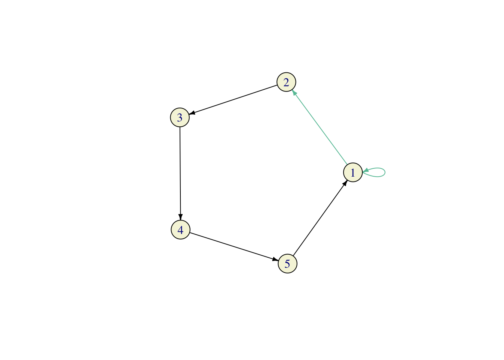

Solution:
nsim <- 100000
X <- rgeom(nsim, prob = 0.5)
Y <- rgeom(nsim, prob = 0.5)
Z <- X+Y
X_cond = X[ Z == 5 ]
mean(X_cond == 3)
#R> [1] 0.1690112We have \[ {\mathbb{P}}[ X = 3 | Z= 5 ] = \frac{{\mathbb{P}}[ X=3 \text{ and }Z=5]}{{\mathbb{P}}[Z=5]} = \frac{{\mathbb{P}}[X=3 \text{ and }Y = 2]}{{\mathbb{P}}[Z=5]} \] Since \(X\) and \(Y\) are independent, we have \({\mathbb{P}}[ X=3 \text{ and }Y=2 ] = {\mathbb{P}}[X=3] {\mathbb{P}}[ Y=2] = 2^{-4} 2^{-3} = 2^{-7}\). To compute \({\mathbb{P}}[ Z = 5]\) we need to split the event \(\{ Z = 5 \}\) into events we know how to deal with. Since \(Z\) is built from \(X\) and \(Y\), we write \[ \begin{align} {\mathbb{P}}[ Z = 5 ] = &{\mathbb{P}}[X=0 \text{ and }Y=5]+ {\mathbb{P}}[ X=1 \text{ and }Y=4] + {\mathbb{P}}[ X=2 \text{ and }Y=3] + \\ & {\mathbb{P}}[ X=3 \text{ and }Y=2] + {\mathbb{P}}[ X=4 \text{ and }Y=1] + {\mathbb{P}}[ X = 5 \text{ and }Y=0]. \end{align}\] Each of the individual probabilities in the sum above is \(2^{-7}\), so \({\mathbb{P}}[ X = 3 | Z = 5] = \frac{1}{6}\). This gives us an error of 0.0023445.
Comments:
Math. Let us, first, recall what the conditional probability is. The definition we learn in the probability class is the following \[ {\mathbb{P}}[A | B] = \frac{{\mathbb{P}}[A \text{ and }B]}{{\mathbb{P}}[B]}\], as long as \({\mathbb{P}}[B]>0\). The interpretation is that \({\mathbb{P}}[A|B]\) is still the probability of \(A\), but now in the world where \(B\) is guaranteed to happen. Conditioning usually happens when we receive new information. If someone tells us that \(B\) happened, we can disregard everyhting in the complement of \(B\) and adjust our probability to account for that fact. First we remove from \(A\) anything that belongs to the complement of \(B\), and recompute the probability \({\mathbb{P}}[A \cap B]\). We also have to divide by \({\mathbb{P}}[B]\) because we want the total probability to be equal to \(1\).
Our code starts as usual, but simulating \(X\) and \(Y\) from the required distribution, and constructing a new vector \(Z\) as their sum. The variable X_cond is new; we build it from \(X\) by removing all the elements whose corresponding \(Z\) is not equal to \(5\). This is an example of what is sometimes called the rejection method in simulation. We simply “reject” all simulations which do not satify the condition we are conditioning on. We can think of X_cond as bunch of simulations of \(X\), but in the world where \(Z=5\) is guaranteed to happen. Once we have X_cond, we proceed as usual by computing the relative frequency of the value \(3\) among all possible values \(X\) can take. Note that the same X_cond can also be used to compute the conditional probability \({\mathbb{P}}[ X=1| Z=5]\). In fact, X_cond contains the information about the entire conditional distribution of \(X\) given \(Z=5\); if we draw a histogram of X_cond, we will get a good idea of what this distribution looks like:

The histogram above suggests that the distribution of \(X\), given \(Z=5\), is uniform on \(\{0,1,2,3,4,5\}\). It is - a calculation almost identical to the one we performed above gives that \({\mathbb{P}}[ X= i| Z=5] = \frac{1}{6}\) for each \(i=0,1,2,3,4,5\).